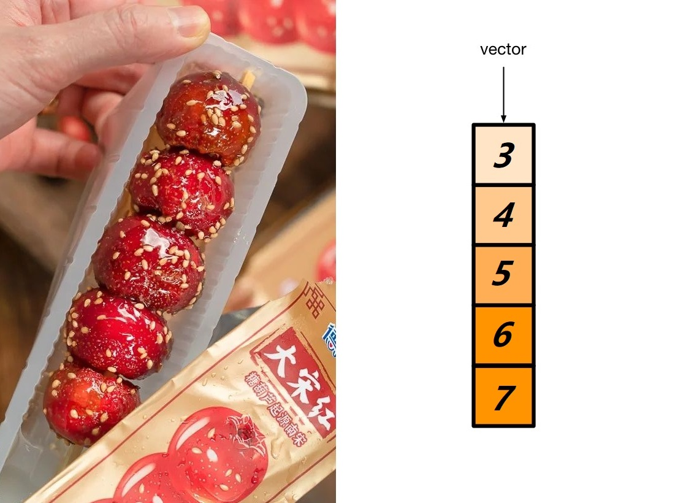
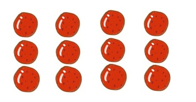
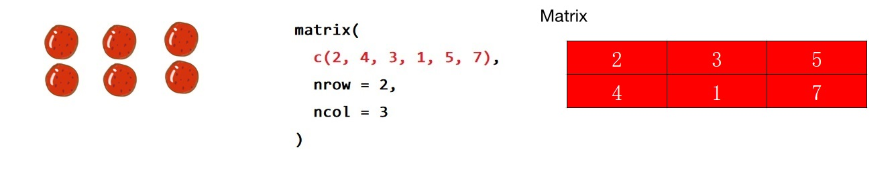
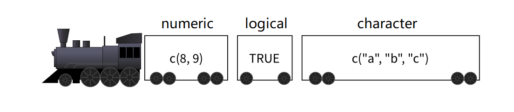
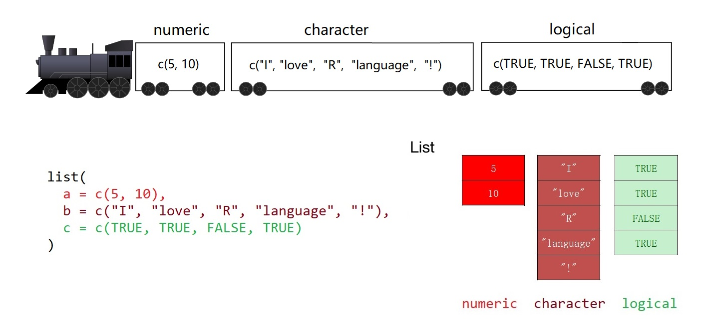
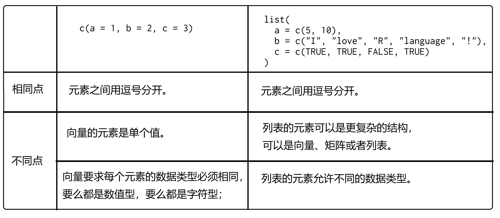
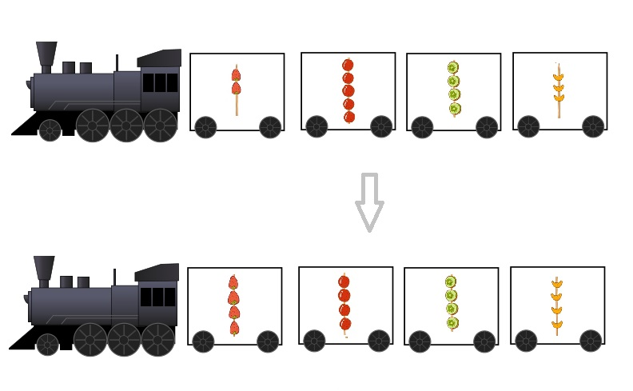
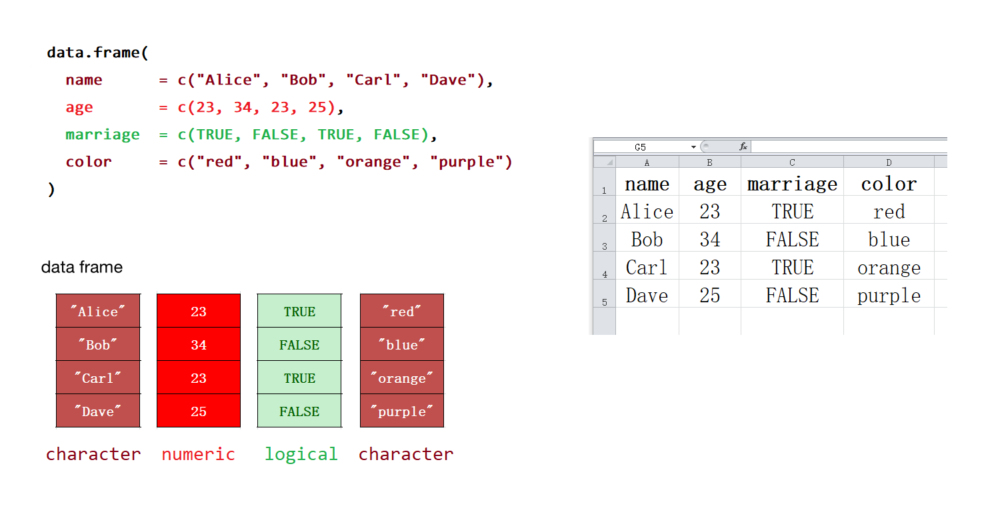

第 5 章 数据结构
前面介绍了向量，它是R语言中最基础的数据结构

我们还会遇到其它数据结构
- 矩阵
- 列表
- 数据框
这些数据结构都可以看作由向量衍生出来的1。
5.1 矩阵
矩阵可以存储行(row)和列(column)二维的数据。

它实际上是向量的另一种表现形式，也就说它的本质还是向量，一维的向量用二维的方式呈现。
矩阵可以用 matrix() 函数创建，第一个位置的参数是用于创建矩阵的向量。比如下面把向量c(2, 4, 3, 1, 5, 7) 转换成2行3列的矩阵
## [,1] [,2] [,3]
## [1,] 2 3 5
## [2,] 4 1 7
大家还记得我们的向量是一个竖着的糖葫芦， 那么在转换成矩阵的时候，也是先竖着排，第一列竖着的方法排满后，就排第二列，这是默认的情形。如果想改变这一传统习惯，也可以增加一个语句 byrow = TRUE，这条语句让向量先横着排，排完第一行，再排第二行。
## [,1] [,2] [,3]
## [1,] 2 4 3
## [2,] 1 5 75.2 列表
如果我们想要装更多的东西，可以想象有一个小火车2，小火车的每节车厢是独立的，因此每节车厢装的东西可以不一样。这种结构装载数据的能力很强大，称之为列表（list）。我们可以使用list()函数创建列表

list1 <- list(
a = c(5, 10),
b = c("I", "love", "R", "language", "!"),
c = c(TRUE, TRUE, FALSE, TRUE)
)
list1## $a
## [1] 5 10
##
## $b
## [1] "I" "love" "R" "language" "!"
##
## $c
## [1] TRUE TRUE FALSE TRUE

5.3 数据框
前面说过，列表可以想象成一个小火车，如果每节车厢装的都是向量而且等长，那么这种特殊形式的列表就变成了数据框 (data frame)

换句话说，数据框是一种特殊的列表，我们可以使用 data.frame() 函数构建数据框
df <- data.frame(
name = c("Alice", "Bob", "Carl", "Dave"),
age = c(23, 34, 23, 25),
marriage = c(TRUE, FALSE, TRUE, FALSE),
color = c("red", "blue", "orange", "purple")
)
df## name age marriage color
## 1 Alice 23 TRUE red
## 2 Bob 34 FALSE blue
## 3 Carl 23 TRUE orange
## 4 Dave 25 FALSE purple
数据框类似于我们经常用的excel表格。由于数据框融合了向量、列表和矩阵的特性，所以在数据科学的统计建模和可视化中运用非常广泛。